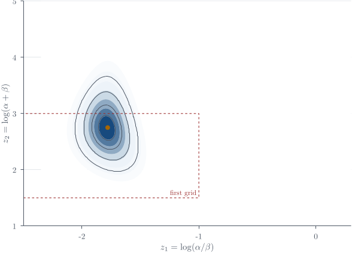
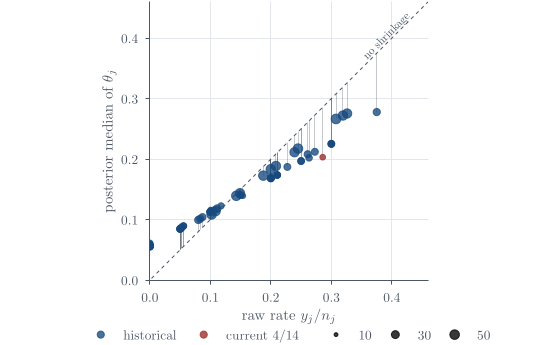

Hierarchical Bayes
Part of Bayesian statistics · 9 questions on this topic · What links here
Hierarchical Bayes

| Part | Bayesian statistics |
| Chapter | 8 of 9 in this part |
| Previous | Exponential families and conjugacy |
| Next | Bayesian linear regression |
| Questions | 9 (6 book, 1 practice, 1 final prep, 1 concept) |
| Definitions | Hierarchical Bayesian model · Hyperparameter · Exchangeability · Empirical Bayes · Grid Monte Carlo approximation |
| Results | Normal hierarchical shrinkage · Study-rate full conditional · Marginal hyperposterior |
| Figures | 2 |
This chapter develops Bayesian models for related groups. The central idea is not conjugacy: a hierarchy can be conjugate or nonconjugate. Its defining feature is that group-specific parameters are connected through a shared population distribution, allowing partial pooling while preserving genuine between-group variation.
Why hierarchical Bayes?
Definition 1 (Hierarchical Bayesian model) Hierarchical Bayes is ordinary Bayes for data that arrive in related groups. Each group is allowed to have its own parameter, but those group parameters are modelled as draws from a common population distribution. This structure is useful whenever complete equality between groups is implausible, yet treating them as unrelated would discard real information.
From one tutorial class to many
For one tutorial class, let Y_i be the mark of student i and let \theta be the class’s unknown true mean. With a known within-class variance \sigma^2, an ordinary Bayesian model is
Y_i\mid\theta\sim\operatorname{N}(\theta,\sigma^2), \qquad \theta\sim\operatorname{N}(\mu_0,\tau_0^2).
The sampling distribution describes variation between students, whereas the prior describes uncertainty about the class mean. Bayes’ rule combines the two sources of information.
Now suppose there are J tutorial classes. Give class j its own mean \theta_j: Y_{ij}\mid\theta_j,\sigma^2 \sim\operatorname{N}(\theta_j,\sigma^2), \qquad i=1,\ldots,n_j,\qquad j=1,\ldots,J. \qquad(1) Estimating every \theta_j separately ignores that all the classes belong to the same course. A second level connects them: \theta_j\mid\mu,\tau^2 \stackrel{\mathrm{iid}}{\sim}\operatorname{N}(\mu,\tau^2), \qquad j=1,\ldots,J. \qquad(2) Here \mu is the overall course mean and \tau^2 measures genuine between-class variation. The hierarchy is
(\mu,\tau^2)\longrightarrow\theta_j\longrightarrow Y_{ij}.
The first arrow describes variation between class means; the second describes variation between students within a class. Confusing these two levels would attribute sampling noise among students to real differences among classes.
Definition 2 (Hyperparameter) For a fully Bayesian analysis, the population-level quantities are also unknown and receive priors, for example
\mu\sim\operatorname{N}(m_0,s_0^2), \qquad \tau^2\sim\operatorname{InvGamma}(a,b).
The quantities controlling the distribution of the \theta_j’s are called hyperparameters, or higher-level parameters. Once priors are assigned to them, their uncertainty is propagated into every class-specific posterior.
Complete pooling, no pooling, and partial pooling
The modelling choice can be organised into three cases.
| Approach | Assumption and consequence |
|---|---|
| Complete pooling | Set \theta_1=\cdots=\theta_J=\theta and analyse all students as though every class has exactly the same mean. |
| No pooling | Estimate each \theta_j from class j alone; information from the other classes is discarded. |
| Partial pooling | Retain distinct \theta_j’s but connect them through the shared distribution in Equation 2. |
Hierarchical Bayes produces partial pooling. A large class can speak mostly for itself. A small class has a noisy sample mean, so its estimate is pulled more strongly toward the population centre. This movement is called shrinkage or borrowing strength.
Where the shrinkage weight comes from
Condition for the moment on known \mu, \tau^2, and \sigma^2. The sample mean in class j satisfies
\overline Y_j\mid\theta_j \sim\operatorname{N}\!\left(\theta_j,\frac{\sigma^2}{n_j}\right).
After observing \overline y_j, multiply its likelihood by the second-level prior: \begin{align*} p(\theta_j\mid\overline y_j,\mu,\tau^2,\sigma^2) &\propto \exp\!\left\{-\frac{n_j}{2\sigma^2} (\overline y_j-\theta_j)^2\right\} \exp\!\left\{-\frac{1}{2\tau^2} (\theta_j-\mu)^2\right\}\\ &=\exp\!\left\{-\frac12\left[ \frac{n_j}{\sigma^2}(\theta_j^2-2\overline y_j\theta_j +\overline y_j^2) +\frac1{\tau^2}(\theta_j^2-2\mu\theta_j+\mu^2) \right]\right\}\\ &\propto\exp\!\left\{-\frac12\left[ \left(\frac{n_j}{\sigma^2}+\frac1{\tau^2}\right)\theta_j^2 -2\left(\frac{n_j\overline y_j}{\sigma^2} +\frac\mu{\tau^2}\right)\theta_j \right]\right\}. \end{align*} Set
A_j=\frac{n_j}{\sigma^2}+\frac1{\tau^2}, \qquad B_j=\frac{n_j\overline y_j}{\sigma^2}+\frac\mu{\tau^2}.
Completing the square gives \begin{align*} A_j\theta_j^2-2B_j\theta_j &=A_j\left(\theta_j^2-2\frac{B_j}{A_j}\theta_j\right)\\ &=A_j\left[ \left(\theta_j-\frac{B_j}{A_j}\right)^2 -\left(\frac{B_j}{A_j}\right)^2 \right]. \end{align*}
Proposition 1 (Normal hierarchical shrinkage) The final term is constant in \theta_j. The remaining kernel is normal, so \theta_j\mid\overline y_j,\mu,\tau^2,\sigma^2 \sim\operatorname{N}\!\left( \frac{B_j}{A_j},\frac1{A_j}\right). \qquad(3) Its variance is \begin{align*} \frac1{A_j} &=\frac1{n_j/\sigma^2+1/\tau^2}\\ &=\frac{\sigma^2\tau^2}{\sigma^2+n_j\tau^2}, \end{align*} and its mean can be rearranged without omitting any terms: \begin{align*} \frac{B_j}{A_j} &=\frac{n_j\overline y_j/\sigma^2+\mu/\tau^2} {n_j/\sigma^2+1/\tau^2}\\ &=\frac{n_j\tau^2\overline y_j+\sigma^2\mu} {\sigma^2+n_j\tau^2}\\ &=\frac{n_j\tau^2}{\sigma^2+n_j\tau^2}\overline y_j +\frac{\sigma^2}{\sigma^2+n_j\tau^2}\mu\\ &=w_j\overline y_j+(1-w_j)\mu, \end{align*} where w_j=\frac{n_j\tau^2}{\sigma^2+n_j\tau^2}, \qquad 1-w_j=\frac{\sigma^2}{\sigma^2+n_j\tau^2}. \qquad(4) Thus
\mathbb{E}(\theta_j\mid\overline y_j,\mu,\tau^2,\sigma^2) =w_j\overline y_j+(1-w_j)\mu.
If n_j is large, then w_j is close to one and class j mainly trusts its own data. If n_j is small, then w_j is smaller and the estimate moves toward \mu. If the class means are genuinely heterogeneous, then \tau^2 is large and the model shrinks less. In a full Bayesian fit, the data from all classes learn \mu and \tau^2, so the amount of sharing is itself uncertain rather than fixed in advance.
Example 1 (Large and small tutorial classes) Suppose the overall mean is \mu=70, the within-class standard deviation is \sigma=10, and the between-class standard deviation is \tau=5. Class A has 100 students and \overline y_A=75, while Class B has only two students and \overline y_B=95.
Question. Compute the two shrinkage weights and posterior means, treating \mu, \sigma^2, and \tau^2 as fixed, and explain why the more extreme sample mean need not produce the more extreme posterior mean.
Solution. For Class A, \begin{align*} w_A&=\frac{100(25)}{100+100(25)}=\frac{25}{26}\approx0.962,\\ \mathbb{E}(\theta_A\mid\overline y_A,\mu,\tau^2,\sigma^2) &=\frac{25}{26}(75)+\frac1{26}(70)\approx74.81. \end{align*} For Class B, \begin{align*} w_B&=\frac{2(25)}{100+2(25)}=\frac13,\\ \mathbb{E}(\theta_B\mid\overline y_B,\mu,\tau^2,\sigma^2) &=\frac13(95)+\frac23(70)\approx78.33. \end{align*} The extreme average from the small class is not ignored, but it is recognised as much less precise.
Each group gets its own parameter, while the group parameters come from a shared population distribution. Information does not pass directly from one class to another. Every class helps learn the common population quantities, and those quantities then influence every group-specific posterior. Groups therefore learn from their own data while borrowing strength from the others.
“Borrowing strength” can sound more mysterious than it is. Class A does not hand observations directly to Class B. Both classes help estimate the shared population distribution, and that distribution changes what is plausible for each class. The gain is largest for small groups, but the same mechanism can over-shrink genuinely unusual groups if the population model is too rigid. Partial pooling is powerful because it compromises; the adequacy of that compromise still has to be checked.
A first hierarchy: TG5 cattle studies
Genetics is among the most statistically sophisticated applied fields, but that sophistication is often hidden behind software. A scientist may be using a recently developed Monte Carlo method because it has appeared in a software package, without knowing how the method works. Someone nevertheless has to establish that the computation and its assumptions are sound. That is a fairly concrete use for statistical expertise. 1
The practical difficulty begins even earlier. A proper meta-analysis tries to find every relevant study, including studies with small or null effects that were never published. In this case much of the material was unpublished, and the data were obtainable largely because a company already had commercial relationships with the breeders. The available records were study summaries rather than the complete farm-level records. Commercial questions and scientific questions were not always the same. Getting the data is not as easy as it sounds.
Example 2 (TG5 cattle hierarchy) A cattle-genetics meta-analysis illustrates hierarchical Bayes. The search was not exhaustive, but it recovered 14 independent studies, many of them unpublished, which produced 19 standardised estimates of a TG5 genotype effect on beef marbling. The studies covered four breed groups and four marbling measurements, so treating every estimate as an exchangeable replicate would erase scientifically meaningful structure.
The original study-level analyses compared the CC and TT genotypes with CT, then divided each contrast by its residual standard deviation. A schematic version of the hierarchy is \begin{align*} y_{ij}\mid\delta_i,w_{ij} &\sim\operatorname{N}(\delta_i,w_{ij}^{-1}),\\ \delta_i\mid\mu_{b(i)},\tau_{\mathrm{study}} &\sim\operatorname{N}(\mu_{b(i)},\tau_{\mathrm{study}}^{-1}),\\ \mu_b\mid\mu_0,\tau_{\mathrm{breed}} &\sim\operatorname{N}(\mu_0,\tau_{\mathrm{breed}}^{-1}),\\ \mu_0&\sim\operatorname{N}(0,\xi^2), \qquad \xi^2\text{ large}. \end{align*} Here w_{ij} records the within-study information, \delta_i is a study effect, and \mu_b is a breed-group effect. Precision parameters were given diffuse scaled inverse-\chi^2-type priors in the applied analysis. The diagrammatic flow is
\text{overall effect}\longrightarrow \text{breed effect}\longrightarrow \text{study effect}\longrightarrow \text{observed contrast}.
The hierarchy performs partial pooling at more than one level. The reported posterior for TT minus CC lay mostly above zero, with a smaller shift for one T copy, but the important methodological point is that every conclusion and every uncertainty interval came from one coherent multilevel fit. The example connects Bayesian random parameters to mixed models. The analysis was fitted in WinBUGS using a Gibbs sampler; the “GS” in the software name stands for Gibbs sampling.
Rat tumours: why a hierarchy?
Example 3 (Rat-tumour hierarchy) Tumour rates in female F344 rats supply a second hierarchical example. In a current control study, y=4 of n=14 rats developed one or more tumours over two years.2 A one-study model is
Y\mid\theta\sim\operatorname{Bin}(14,\theta), \qquad \theta\sim\operatorname{Beta}(\alpha,\beta),
giving
\theta\mid Y=4 \sim\operatorname{Beta}(\alpha+4,\beta+10).
The question is how to choose (\alpha,\beta) when 70 earlier control studies are available.
Let study j contribute y_j tumour-bearing rats from n_j animals. The hierarchical model is Y_j\mid\theta_j,n_j\sim\operatorname{Bin}(n_j,\theta_j), \qquad \theta_j\mid\alpha,\beta \stackrel{\mathrm{iid}}{\sim}\operatorname{Beta}(\alpha,\beta), \quad j=1,\ldots,J. \qquad(5) Each study has its own rate, but all study rates are drawn from a common population distribution.
Good applied statistics begins before the algebra. Downloading a data set without understanding why the experiment was conducted, how an outcome was defined, or which sources of variation changed between studies is not enough. The hierarchy should represent the scientific design we actually have, not a generic stack of random effects added after the fact. The version of the rat example used here follows the account in Gelman’s book.3
Exchangeability
Definition 3 (Exchangeability) The parameters \theta_1,\ldots,\theta_J are exchangeable if their joint density is invariant to every permutation \pi:
p(\theta_1,\ldots,\theta_J) =p(\theta_{\pi(1)},\ldots,\theta_{\pi(J)}).
Conditional iid sampling from a common Beta distribution implies exchangeability:
p({\boldsymbol{\theta}}\mid\alpha,\beta) =\prod_{j=1}^Jp(\theta_j\mid\alpha,\beta).
The scientific claim is that study labels do not encode systematic differences in strain, laboratory, protocol, calendar time, or tumour definition. The sample sizes n_j may differ; exchangeability requires the latent rates not to be systematically related to those sizes.
Exchangeability is a judgement made before seeing the outcomes, not permission to ignore everything known about the groups. If laboratory, breed, protocol, or calendar time plausibly changes the rates, that information should enter the hierarchy rather than be hidden by a common label. We assume exchangeability when the remaining labels carry no reason for a systematic ordering; learning more about the data can reveal that a richer grouping is needed.
Empirical hyperparameters by moment matching
Definition 4 (Empirical Bayes) An empirical Bayes analysis estimates prior or population-level hyperparameters from data and then treats those estimates as fixed in a lower-level Bayesian update. A full Bayesian analysis instead assigns the hyperparameters a prior and propagates their posterior uncertainty.
The observed historical proportions \widehat\theta_j=y_j/n_j had empirical mean m=0.136 and standard deviation s=0.103. A \operatorname{Beta}(\alpha,\beta) variable has
m=\frac\alpha{\alpha+\beta}, \qquad s^2=\frac{\alpha\beta} {(\alpha+\beta)^2(\alpha+\beta+1)}.
Let t=\alpha+\beta. Since \alpha=mt and \beta=(1-m)t, \begin{align*} s^2 &=\frac{(mt)((1-m)t)}{t^2(t+1)}\\ &=\frac{m(1-m)}{t+1}. \end{align*} Solving, \begin{align*} s^2(t+1)&=m(1-m),\\ t+1&=\frac{m(1-m)}{s^2},\\ t&=\frac{m(1-m)}{s^2}-1,\\ \alpha&=mt, \qquad \beta=(1-m)t. \end{align*} Substituting m=0.136 and s=0.103 gives approximately
(\alpha,\beta)\approx(1.37,8.7).
The values (1.370,8.693) differ slightly from that approximation; the difference is attributable to rounding in the reported historical standard deviation.
Using these values as if known gives the current-study posterior
\theta_{\mathrm{current}}\mid y=4,n=14 \sim\operatorname{Beta}(5.370,18.693),
with mean
\frac{5.370}{5.370+18.693} \approx0.223.
This lies between the historical mean 0.136 and the current proportion 4/14\approx0.286. That movement is partial pooling.
The plug-in calculation has three limitations:
the empirical variance of y_j/n_j contains both real between-study variation and binomial sampling variation;
treating estimated (\alpha,\beta) as known omits hyperparameter uncertainty; and
historical and current studies may not be exchangeable.
There are two related but distinct reuse issues. For the 70 historical studies, empirical Bayes estimates (\alpha,\beta) from the same y_j values whose study rates are then re-estimated, so treating the fitted hyperparameters as fixed understates uncertainty. Applying that historical fit to a separate current 4/14 study does not literally reuse the current data, but it still ignores uncertainty in the population distribution. Full Bayes repairs both calculations by propagating the posterior uncertainty in (\alpha,\beta).
Empirical Bayes is often a sensible first analysis, but its apparent precision can be deceptive. Once estimated hyperparameters are treated as fixed, the lower-level posterior forgets that the population distribution was itself learned from finite data. A full Bayesian model restores that uncertainty. The trade-off is computational rather than philosophical: we gain a coherent uncertainty calculation at the cost of a larger joint posterior.
Full Bayesian treatment
Let {\boldsymbol{\phi}}=(\alpha,\beta)^{\mathsf T}. A full Bayesian model assigns a hyperprior p(\alpha,\beta) and uses \begin{align*} p({\boldsymbol{\theta}},\alpha,\beta) &=p(\alpha,\beta) \prod_{j=1}^Jp(\theta_j\mid\alpha,\beta),\\ p({\boldsymbol{y}}\mid{\boldsymbol{\theta}},\alpha,\beta) &=p({\boldsymbol{y}}\mid{\boldsymbol{\theta}}) =\prod_{j=1}^Jp(y_j\mid\theta_j). \end{align*} The second equality follows because the data are conditionally independent of the hyperparameters given the study rates. Therefore \begin{aligned} p({\boldsymbol{\theta}},\alpha,\beta\mid{\boldsymbol{y}}) &\propto p(\alpha,\beta) \prod_{j=1}^J p(y_j\mid\theta_j) p(\theta_j\mid\alpha,\beta). \end{aligned} \qquad(6)
For one study, the two factors are \begin{align*} p(y_j\mid\theta_j) &=\binom{n_j}{y_j} \theta_j^{y_j}(1-\theta_j)^{n_j-y_j},\\ p(\theta_j\mid\alpha,\beta) &=\frac{\Gamma(\alpha+\beta)} {\Gamma(\alpha)\Gamma(\beta)} \theta_j^{\alpha-1}(1-\theta_j)^{\beta-1}. \end{align*} Holding (\alpha,\beta) fixed and multiplying powers, \begin{align*} p(\theta_j\mid\alpha,\beta,{\boldsymbol{y}}) &\propto \theta_j^{y_j+\alpha-1} (1-\theta_j)^{n_j-y_j+\beta-1}. \end{align*}
Proposition 2 (Study-rate full conditional) Normalising gives \boxed{ \theta_j\mid\alpha,\beta,{\boldsymbol{y}} \sim\operatorname{Beta}(y_j+\alpha,n_j-y_j+\beta)}. \qquad(7) Conditional on the hyperparameters, the study rates are independent, so the joint conditional is the product of these J Beta densities.
Integrating out the study rates
To obtain the marginal posterior for (\alpha,\beta), integrate Equation 6 over every \theta_j. For one study, \begin{align*} &\int_0^1p(y_j\mid\theta_j) p(\theta_j\mid\alpha,\beta)\,\mathrm{d}\theta_j\\ &\quad= \binom{n_j}{y_j} \frac{\Gamma(\alpha+\beta)} {\Gamma(\alpha)\Gamma(\beta)} \int_0^1 \theta_j^{y_j+\alpha-1} (1-\theta_j)^{n_j-y_j+\beta-1}\,\mathrm{d}\theta_j\\ &\quad= \binom{n_j}{y_j} \frac{\Gamma(\alpha+\beta)} {\Gamma(\alpha)\Gamma(\beta)} B(y_j+\alpha,n_j-y_j+\beta)\\ &\quad= \binom{n_j}{y_j} \frac{\Gamma(\alpha+\beta) \Gamma(y_j+\alpha) \Gamma(n_j-y_j+\beta)} {\Gamma(\alpha)\Gamma(\beta) \Gamma(n_j+\alpha+\beta)}. \end{align*}
Proposition 3 (Marginal hyperposterior) The binomial coefficient does not depend on (\alpha,\beta), so the hyperposterior kernel is \boxed{ p(\alpha,\beta\mid{\boldsymbol{y}}) \propto p(\alpha,\beta) \prod_{j=1}^J \frac{\Gamma(\alpha+\beta) \Gamma(y_j+\alpha) \Gamma(n_j-y_j+\beta)} {\Gamma(\alpha)\Gamma(\beta) \Gamma(n_j+\alpha+\beta)}}. \qquad(8) This expression is available pointwise but is not a familiar normalised density.
Hyperprior and transformations
One proper choice is independent exponential hyperpriors,
\alpha\sim\operatorname{Exp}(\lambda), \qquad \beta\sim\operatorname{Exp}(\lambda), \qquad \alpha\perp\beta.
The choice \lambda=1 is a plain starting point. Its implications are clearer after writing
u=\frac{\alpha}{\alpha+\beta}, \qquad t=\alpha+\beta, \qquad \alpha=ut, \qquad \beta=(1-u)t.
Because
\left|\frac{\partial(\alpha,\beta)}{\partial(u,t)}\right|=t,
the transformed density is \begin{align*} p(u,t) &=\lambda^2e^{-\lambda t}t\\ &=\mathbf{1}\{0<u<1\} \frac{\lambda^2}{\Gamma(2)}t^{2-1}e^{-\lambda t}. \end{align*} Thus u\sim\operatorname{Uniform}(0,1), t\sim\operatorname{Gamma}(2,\lambda), and u\perp t. The prior is proper and its rate has an interpretable effect: \mathbb{E}(t)=2/\lambda. Calling a smaller rate “more diffuse” is incomplete, because it also favours larger total concentration and therefore more tightly clustered study rates conditional on u.
Gelman’s alternative improper prior is p(\alpha,\beta)\propto(\alpha+\beta)^{-5/2}, \qquad \alpha,\beta>0. \qquad(9) It can be motivated by a uniform prior on
u=\frac{\alpha}{\alpha+\beta}, \qquad v=\frac1{\sqrt{\alpha+\beta}}.
Let t=\alpha+\beta. The forward derivatives are
\frac{\partial u}{\partial\alpha}=\frac\beta{t^2}, \quad \frac{\partial u}{\partial\beta}=-\frac\alpha{t^2}, \quad \frac{\partial v}{\partial\alpha} =\frac{\partial v}{\partial\beta} =-\frac12t^{-3/2}.
Hence \begin{align*} \left|\frac{\partial(u,v)}{\partial(\alpha,\beta)}\right| &=\left| \frac\beta{t^2}\left(-\frac12t^{-3/2}\right) -\left(-\frac\alpha{t^2}\right) \left(-\frac12t^{-3/2}\right) \right|\\ &=\frac{\alpha+\beta}{2t^{7/2}}\\ &=\frac12t^{-5/2}. \end{align*} A constant density in (u,v) therefore transforms to p(\alpha,\beta)\propto t^{-5/2}, as claimed. Because the prior is improper, posterior propriety must be established for the data configuration being analysed.
The transformation is derived here. It does not make an improper prior uniquely noninformative, and it does not remove the need to state the domain.
Remark 1 (Uniformity depends on a domain). The Jacobian calculation is local; calling the prior “uniform in (u,v)” also requires a stated domain. Over an unbounded or boundary-touching domain the density is improper, so the transformed expression is a modelling choice, not an automatic noninformative prior.
The grid calculation uses
z_1=\log(\alpha/\beta), \qquad z_2=\log(\alpha+\beta).
Let t=e^{z_2} and r=e^{z_1}. Solving \alpha/\beta=r and \alpha+\beta=t gives \alpha=t\frac{r}{1+r}, \qquad \beta=t\frac1{1+r}. \qquad(10) Equivalently, let m=r/(1+r). The Jacobians are
\left|\frac{\partial(\alpha,\beta)}{\partial(m,t)}\right|=t, \qquad \left|\frac{\partial(m,t)}{\partial(z_1,z_2)}\right| =m(1-m)t.
Therefore \begin{align*} \left|\frac{\partial(\alpha,\beta)} {\partial(z_1,z_2)}\right| &=t^2m(1-m)\\ &=(tm)(t(1-m))\\ &=\alpha\beta. \end{align*} Under Equation 9, the transformed prior is therefore p(z_1,z_2) \propto \alpha\beta(\alpha+\beta)^{-5/2}, \qquad(11) where (\alpha,\beta) are obtained from Equation 10.
Grid approximation and posterior simulation
The calculation begins with a rectangular grid over (z_1,z_2), evaluates the unnormalised transformed hyperposterior at each cell, and expands the grid if substantial mass lies against an edge. The first trial used approximately
z_1\in[-2.5,-1], \qquad z_2\in[1.5,3],
and clipped part of the high-density region. An illustrative adjusted range was approximately
z_1\in[-2.35,0.3], \qquad z_2\in[1,5].
The grid method is deliberately visible. Modern MCMC software can hide much of this computation, but it still faces the same posterior geometry. A grid forces us to inspect the transformed scale, the Jacobian, the region carrying mass, and whether density is being clipped at a boundary. In two dimensions that transparency is often worth more than a more sophisticated black box.
Definition 5 (Grid Monte Carlo approximation) Let w_{ab} be the unnormalised hyperposterior value at grid cell (a,b), including the Jacobian \alpha\beta. The discrete approximation is
\widehat p_{ab}=\frac{w_{ab}}{\sum_{r,s}w_{rs}}.
Sampling from the approximate full posterior proceeds as follows.
Flatten the grid weights into a one-dimensional list, form cumulative probabilities, draw U\sim\operatorname{Uniform}(0,1), and select the first cell whose cumulative probability exceeds U. Equivalently, draw a grid cell (Z_1,Z_2) with probabilities \widehat p_{ab}. Optionally add independent uniform jitter within the selected cell.
Transform (Z_1,Z_2) to (\alpha,\beta) using Equation 10.
For each study, draw independently
\theta_j\sim\operatorname{Beta}(y_j+\alpha,n_j-y_j+\beta)
using Equation 7.
- Repeat to obtain (\alpha^{(l)},\beta^{(l)},{\boldsymbol{\theta}}^{(l)}), l=1,\ldots,L.
These grid-cell draws are independent; this is Monte Carlo from a piecewise-constant approximation, not Markov-chain Monte Carlo. A 100\times100 grid has 10^4 cells and remains practical because only two hyperparameters are integrated numerically. A comparable grid over all J+2 unknowns would be impossible.
Here is the corresponding calculation. The vectors y and n_trials contain the tumour counts y_j and sample sizes n_j for the 71 studies. The logarithmic calculation is important: subtracting the largest log weight before exponentiating prevents numerical underflow without changing the normalised probabilities.
z <- expand.grid(
z1 = seq(-2.35, 0.30, length.out = 100),
z2 = seq( 1.00, 5.00, length.out = 100)
)
total <- exp(z$z2)
mean_rate <- plogis(z$z1)
z$alpha <- total * mean_rate
z$beta <- total * (1 - mean_rate)
log_w <- vapply(seq_len(nrow(z)), function(k) {
a <- z$alpha[k]
b <- z$beta[k]
-2.5 * log(a + b) +
sum(lbeta(y + a, n_trials - y + b) - lbeta(a, b)) +
log(a) + log(b) # Jacobian alpha * beta
}, numeric(1))
prob <- exp(log_w - max(log_w))
prob <- prob / sum(prob)
set.seed(3500)
M <- 1000L
cell <- sample.int(nrow(z), M, replace = TRUE, prob = prob)
alpha <- z$alpha[cell]
beta <- z$beta[cell]
theta <- vapply(seq_along(y), function(j) {
rbeta(M, y[j] + alpha, n_trials[j] - y[j] + beta)
}, numeric(M))Each row of theta is one draw of all 71 study rates. Summarising a column marginalises (\alpha,\beta) automatically because the corresponding hyperparameter draws are simply not retained in that summary. Before using the result, plot the grid weights and check that appreciable mass does not meet an edge; a grid whose boundary cuts through the density fails precisely that check.
For a posterior expectation,
\mathbb{E}(\alpha\mid{\boldsymbol{y}}) \approx\frac1L\sum_{l=1}^L\alpha^{(l)}.
If the inferential target is only {\boldsymbol{\theta}}, marginalise the hyperparameters by ignoring their sampled coordinates and summarising {\boldsymbol{\theta}}^{(1)},\ldots,{\boldsymbol{\theta}}^{(L)}. This is Monte Carlo marginalisation, not a claim that hyperparameter uncertainty is absent.
Study-specific posterior medians and 95\% intervals, ordered by the raw rates y_j/n_j, do not follow the 45-degree line: small and noisy studies move toward the population centre. This is shrinkage, also called borrowing strength. No observation is literally passed from one study to another. All studies help estimate the shared population quantities, and those quantities then influence every study-specific posterior. The model does not force the rates to be equal; the amount of movement is learned from the between-study spread and each study’s sample size.
Compared with plugging in one estimate of (\alpha,\beta), full Bayes usually widens the marginal intervals for \theta_j because it adds the variance due to hyperparameter uncertainty. Omitting that variance component makes the intervals over-precise.
The hierarchy shares information without forcing all studies to have the same rate. Full Bayes propagates uncertainty in the population of rates into every study-specific posterior. The grid sampler works because only two hyperparameters require numerical integration; in higher dimensions one would normally return to Gibbs or Metropolis–Hastings.

Questions on this topic
Open a question to attempt it. Its worked answer is folded away at the bottom of the page.
| Question | Source | Answer |
|---|---|---|
| Pooling | Book exercise | – |
| Derive the shrinkage weight | Book exercise | – |
| Exchangeability is a scientific claim | Book exercise | – |
| Two hyperpriors | Book exercise | – |
| Sample from a grid | Book exercise | – |
| Full Bayes and interval width | Book exercise | – |
| Q23. Rat-tumour studies and hierarchical shrinkage | Practice set | ✓ |
| Question 17. Hierarchical Poisson model | Final preparation | ✓ |
| C9. Pooling | Concept check | ✓ |
What links here
Pages (6)
- Bayesian foundations — via hyperparameter
- Exponential families and conjugacy — via hyperparameters, Hierarchical Bayes
- Categorical responses — via exchangeable
- Marginal models, and two responses at once — via exchangeable
- How to use the final preparation — via hierarchical models
- Reference formulas and problem-solving workflow — via Empirical Bayes, hyperparameters, Hierarchical models
Questions and answers (16)
- Practice set: Q2 (answer) · Q17 (answer) · Q23 · Q27 · Q49 · Q53 (answer) · Q58
- Final preparation: Question 4 · Question 10 · Question 11 · Question 14 · Question 16 (answer) · Question 17
- Concept checks: C2 (answer) · C9 · C39 (answer)
See also
- Articles from this chapter: Hierarchical Bayesian model · Hyperparameter · Normal hierarchical shrinkage · Exchangeability · Empirical Bayes · Study-rate full conditional · Marginal hyperposterior · Uniformity depends on a domain · Grid Monte Carlo approximation
- All bayesian statistics chapters
- Glossary and index
- Distribution sheet and formula lookup
Footnotes
The connection between statistics and genetics is not accidental: Fisher’s statistical and genetic work belonged to the same programme.↩︎
The historical controls came from a United States National Cancer Institute programme in the 1970s. Two years is most of a laboratory rat’s lifespan, so the time horizon is part of the scientific definition of the rate.↩︎
The underlying analysis is due to Dempster, Selwyn, and Weeks, presented in 1980 and published in the Journal of the American Statistical Association in 1983.↩︎